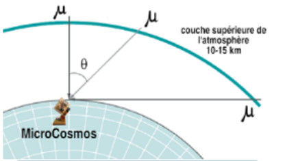
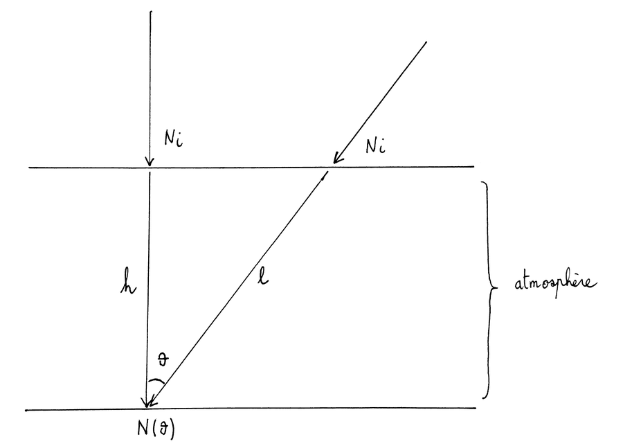
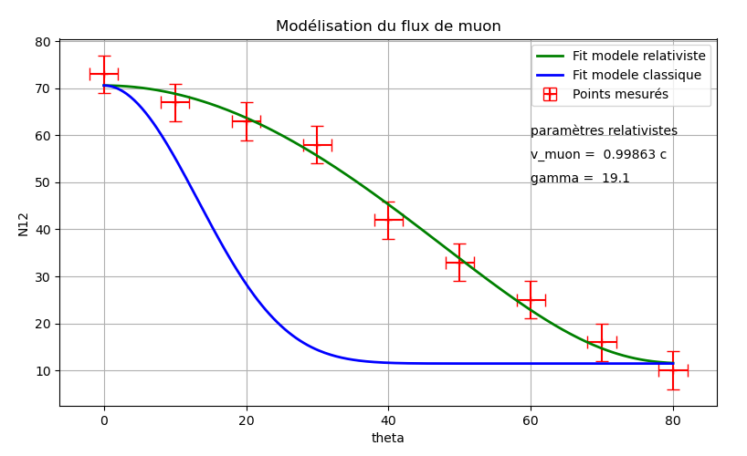

Une pluie venue de l’espace
Les rayons cosmiques primaires, surtout des protons, frappent la haute atmosphère et y produisent des gerbes de particules de courte durée de vie. Ce qui atteint le sol est essentiellement constitué de muons.
Le muon est un cousin lourd de l’électron (environ 200 fois sa masse) qui se désintègre en moyenne au bout de τ = 2,2 µs. Même à la vitesse de la lumière, cela ne fait que cτ ≈ 0,66 km de vol, bien moins que les 10 à 15 km d’air au-dessus de nous. Que l’on compte des muons au niveau de la mer est l’énigme que les deux expériences ci-dessous permettent de résoudre.
Au niveau de la mer, il en passe environ un par centimètre carré et par minute. Ils sont gratuits, sans danger et présents dans toutes les salles de classe.
Les expériences que les élèves rejouent
Expérience A : la distribution angulaire du flux de muons
De la mesure au modèle : on confronte l’hypothèse relativiste aux données du MicroCosmos.

Le dispositif et les mesures
On incline la pile de tubes d’un angle θ par rapport au zénith (berceau en LEGO® ou support gradué du détecteur autonome) et l’on compte les coïncidences entre les tubes 1 et 2 pendant une heure pour chaque angle.
| θ (°) | 0 | 10 | 20 | 30 | 40 | 50 | 60 | 70 | 80 |
|---|---|---|---|---|---|---|---|---|---|
| N12 | 73 | 67 | 63 | 58 | 42 | 33 | 25 | 16 | 10 |
Incertitudes : u(θ) = 2° ; u(N12) = 4 muons. On observe une nette décroissance de N avec θ.

Construire un modèle
Les Ni muons créés en haut de l’atmosphère parcourent l = h / cos θ avant d’atteindre le détecteur. Deux effets se combinent :
- l’absorption par l’air, proportionnelle à la longueur du trajet : Nθ ∝ cos θ ;
- la désintégration en vol, comme une décroissance radioactive : Nθ ∝ Ni · e−t/τ, avec t = l / vmuon.
Nθ = Nθ=0 · cos θ · e−h / (vmuon · τ · cos θ)
Avec la durée de vie au repos du muon (τ = 2,196 µs) et un ajustement par curve_fit en Python,
ce modèle classique ne décrit pas les données : le flux devrait chuter beaucoup plus vite avec θ.

Le modèle relativiste
On remplace τ par γτ (dilatation du temps) :
Nθ = Nθ=0 · cos θ · e−h / (vmuon · γτ · cos θ)
avec γ = 1 / √(1 − v²muon / c²)
L’ajustement donne vmuon = 0,998 63 c, soit γ = 19,1, du même ordre que Frisch et Smith (γ ≈ 9). Des mesures plus récentes, avec un détecteur amélioré, donnent vmuon = 0,992 95 c, soit γ = 8,4.
Ce modèle décrit bien les données.
Durée des mesures. Avec 7 cm² de tube, un point de la courbe demande une heure, contre cinq minutes avec un détecteur à scintillateur. Le faible prix est la réponse : dix détecteurs en classe, un angle par groupe pendant une heure, ou une mesure lancée chaque jour par des volontaires.
Expérience B : la dilatation du temps entre la mer et le sommet
Dans l’esprit de Rossi et Hall (1941) puis de Frisch et Smith (1963), des élèves (Olympiades de Physique) ont fait fonctionner le MicroCosmos sur batterie à Caen (41 m) puis à l’Alpe d’Huez (1 850 m).
Les muons se désintégrant en vol, il doit y en avoir davantage en altitude : sur les 1 809 m qui séparent les deux sites, une partie d’entre eux disparaît avant d’atteindre Caen. Mais combien ? La réponse dépend de la façon dont s’écoule le temps pour le muon.
Les mesures
Le comptage de Caen est corrigé des 15 % de muons absorbés par l’air supplémentaire : 2,228 / 0,85 = 2,62 coïncidences par 2 min.
Deux prédictions théoriques
Physique classique
temps absolu, le même pour tout observateur
Durée de vie propre du muon : τ0 ≈ 2,2 µs
Temps de trajet : t = Δh / v
N(h) / N(0) = exp( t / τ0 )
Sans dilatation du temps, une très grande partie des muons devrait se désintégrer avant d’atteindre Caen.
Relativité restreinte
le temps se dilate pour un observateur au sol
Durée de vie « vue du sol » : τ = γ · τ0
Facteur de Lorentz : γ = 1 / √(1 − v²/c²)
N(h) / N(0) = exp( t / (γ · τ0) )
Vu du sol, l’horloge interne du muon « tourne plus lentement » : il vit plus longtemps, et beaucoup moins de muons sont perdus en route.
Confrontation à l’expérience
Rapport mesuré : 4,20 / 2,62 = 1,60.
Conclusion. La valeur mesurée (1,60) est très proche de la prédiction relativiste (1,63) et très éloignée de la prédiction classique (16) : l’expérience confirme la relativité restreinte.
En classe
Statistique de comptage
Les coïncidences suivent une loi de Poisson : histogrammes, incertitude ± √N, écart-type proche de √moyenne. Le logiciel trace l’histogramme et la loi de Poisson de même moyenne.
Sortir du labo
Sur une batterie USB avec une carte micro-SD, le détecteur fonctionne seul : montagne, avion, ou bocal étanche au fond d’une piscine pour tester l’absorption par l’eau.
Les limites
Des tubes Geiger ne permettent pas de mesurer directement la durée de vie du muon (il faut des muons qui s’arrêtent dans un scintillateur), et le module n’est pas un dosimètre.
Programmes et documents
- APPLogiciel Microcosmos (recommandé)Interface web pour les deux études, programmes Arduino et notice
- INOProgramme Arduino (version de l’article)Comptage des deux tubes et des coïncidences
- PYProgramme Python (version de l’article)Lecture du port série, durée d’expérience et d’acquisition réglables, graphique
- PDFActivité de découverteFiche élève
- PDFArticle du BUP n° 1068 (novembre 2024)MicroCosmos – Partie 1 : un détecteur de particules à base d’Arduino
- PDFMicroCosmos [µ-Cosmos] — QuarkNet handout (en anglais)Le détecteur, la coïncidence et les deux expériences en deux pages
L’article est proposé pour un usage limité : préférez la promotion du BUP :-)